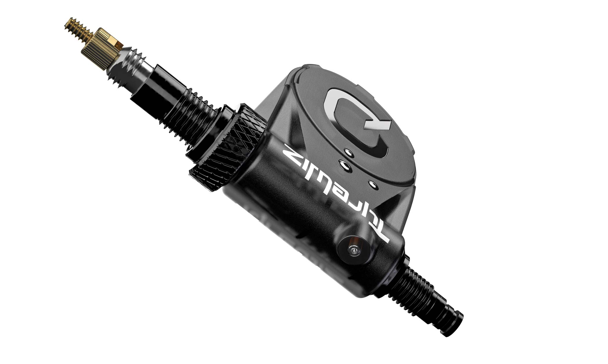

Quarq / SRAM
Quarq TyreWiz 1.0
Supported nowThe original TyreWiz valve-mounted sensor family remains supported in TubeWitch for live pressure, alerts, and activity recording.
TubeWitch uses only the numeric portion of the printed sensor ID.

 AIRSPY MUST be running the custom firmware by bitmeal.
AIRSPY MUST be running the custom firmware by bitmeal.